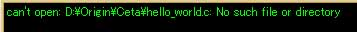

Ceta セットアップ手順書
４．コンパイル動作の確認
このセクションでは「３．Ceta の各種設定」で登録した「LSIC-86」
「Borland C++ Compiler」のコンパイル動作を確認する方法について
説明します。
４−１Ａ．LSIC-86の確認
４−１Ｂ．Borland C++ Compilerの確認
まず、Ceta インストールフォルダの中にある「hello.c」を開いて下さい。
もしhello.cが無ければ新規作成をし、下に示すプログラムソースコードを打ち
込んで下さい。その後「名前を付けて保存」で、必ず拡張子「.c」を指定して
保存して下さい。LSIC-86は拡張子「.cpp」のファイル（一般にC++ソースコード）
はコンパイルできません（lcc: can't handleエラーメッセージが出ます）。
要注意：LSIC-86は、ソースファイル名もDOS8.3形式にする必要があ
ることを思い出して下さい。もしCeta をProgram Filesなどのロングファイル
ネームを含んだフォルダ内にインストールした場合、hello.cをどこかDOS8.3
形式のフォルダ内に移動してから以下の動作確認を行って下さい。
「コマンド」メニューからLSIC-86のlcc.exeを登録したコマンド
メニュー（今回の例では「LSIC86」）をクリックして下さい。下のようなダイア
ログボックスが表示されます。「開始」ボタンをクリックして下さい。
フォルダ、ディレクトリの設定ミスやソースコードのミスが無ければ下の
ようなメッセージがコンパイルメッセージ表示エリアに表示されます。
エクスプローラを開いて、hello.cのあるフォルダ（Ceta インストールフォルダ）
の中に下に示すように「Hello.exe」実行ファイルが新しく作られているはずです。
Hello.exeをダブルクリックすると、下のようにDOSプログラムが起動します。
リターンキーを押せばプログラムが終了し、下のような画面になります。DOSプログラム
ウインドウの右上の「×」ボタンをクリックして、プログラムを終了して下さい。
LSIC-86はDOSコンパイラであることが影響して、主に8.3形式のファイル名制限
が原因でコンパイルが完了しないことがあります。以下に主なエラー状態と、その
主な原因と（有効であると思われる）対処法を解説します。
DOS8.3形式のファイル名について(LSIC-86)
に是非一度目を通していただくことをお薦めします。
＜エラーその壱＞
原因：LSIC-86がシステムドライブにインストールされていない。
対処：LSIC-86をシステムドライブ（WindowsがインストールされているHDDで、
一般にC:ドライブ）にインストールして下さい。_lccや、環境変数の設定も
それに合わせて書き換えて下さい。
＜エラーその弐＞
原因：PATH設定が間違っている。
対処：コマンドのPATH設定でWindowsロングファイル名が使われている可能性があります。
DOS8.3形式でPATH設定をし直して下さい。
＜エラーその参＞

原因：コンパイル対象ファイル名がWindowsロングファイル名を用いている。
対処：LSIC-86はDOS8.3形式しか対応していません。また、コンパイル対象の
ソースコードファイル名がDOS8.3形式でも途中のフォルダ名にロングファイル名
が混じっている場合も同様です。
もし上の例以外のエラーメッセージが表示されたら、_lcc、PATH設定をもう一度
見直して下さい。-I、-Lオプションまでしっかり設定されているかどうか確認して下さい。
それでもなおエラーメッセージが出るなら、ソースコードを見直してみて下さい。
どこかに文法ミスがある可能性があります。
お疲れさまでした。以上でコンパイルに必要な全設定・確認が終了しました。
最後に５．Ceta をより便利に使って頂くために。
をぜひご一読下さい。Ceta のより使いやすい方法、Ceta の設定ファイルの
詳細をご案内いたします。
まず、Ceta インストールフォルダの中にある「hello.c」を開いて下さい。
もしhello.cが無ければ新規作成をし、下に示すプログラムソースコードを打ち
込んで下さい。Borland C++ Compilerは拡張子が「.cpp」のファイル（一般に
C++プログラムソースコードファイル）もコンパイルできます。
保存した後、「コマンド」メニューからBorland C++ Compilerのbcc32.exeを登録したコマンド
メニュー（今回の例では「BCC32(for DOS)」）をクリックして下さい。下のようなダイア
ログボックスが表示されます。「開始」ボタンをクリックして下さい。
フォルダ、ディレクトリの設定ミスやソースコードのミスが無ければ下の
ようなメッセージがコンパイルメッセージ表示エリアに表示されます。
エクスプローラを開いて、hello.cのあるフォルダ（Ceta インストールフォルダ）
の中に下に示すように「Hello.exe」実行ファイルが新しく作られているはずです。
（下の表示と違い、ファイルサイズは53KB近くになります。）
Hello.exeをダブルクリックすると、下のようにDOSプログラムが起動します。
リターンキーを押せばプログラムが終了し、DOSプロンプトウインドウも自動的に
閉じます。
Borland C++ Compiler はWindowsロングファイル名に対応しているのでbcc32.cfg や
ilink32.cfg、コマンドのPATH設定でつまづくことは少ないと思います。ダブル
クォーテーション「"」でフォルダ名の両端を囲み、複数フォルダを指定するときは
フォルダとフォルダの間をセミコロン「；」でつなぐことを忘れないで下さい。
＜例＞・・・インクルードファイルに独自のヘッダーファイルのあるフォルダも指定する。
(bcc32.cfg)
-I"c:¥your_bcb_directory¥include";"d:¥data_dir¥header_dir"
エラーが発生したら、bcc32.cfg ilink32.cfg コマンドのPATH設定を見直して下さい。
もしそれでも直らなかったらソースコードに文法上のミスがある可能性があります。
お疲れさまでした。以上でコンパイルに必要な全設定・確認が終了しました。
最後に５．Ceta をより便利に使って頂くために。
をぜひご一読下さい。Ceta のより使いやすい方法、Ceta の設定ファイルの
詳細をご案内いたします。
５．Ceta をより便利に使って頂くために。へ進む